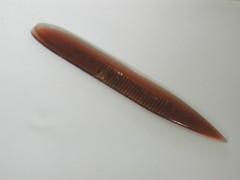
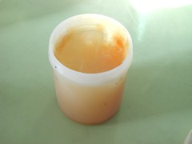
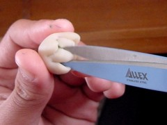
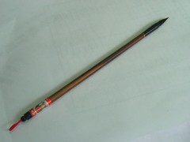
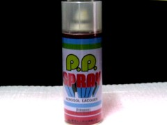
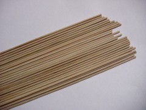

The
tools below also could be replaced by anything in daily
life. For example, a ball pen can displace the point of
cattle's horn. That's to say, we should use any tools nimbly. The
tools below also could be replaced by anything in daily
life. For example, a ball pen can displace the point of
cattle's horn. That's to say, we should use any tools nimbly.
|
| The point of cattle's horn 
This is the chief tool. It can carve, pick and sting. Besides,
it can make a dent of equal rank grid. If we don't have
the point of cattle's horn, we can use something with
the characters of sharp, flat, level and round. For example,
we can use a ball pen or a western-style knife. One side
of the point of cattle's horn nowadays is like a comb.
We can use it to make hair or beard. |
|
|
 |
|
 |
Beeswax
Before making the flour miniature, we smear it on our hands to
prevent the dough from sticking. |
|
Scissors
It can shear the dough like petals, fingers and toes. |
|
 |
|
 |
A Chinese writing brush
We use it in order to draw complicate and tiny pictures, points
and lines such as facial features, narrow stripes of clothes.
If we don't have a Chinese writing brush, we can use an ink
pen or a color pen. |
|
Limpid spray paint
We use it to keep the flour miniature's bright colors and separate
from the air. It makes the flour miniature keep longer. |
|
 |
|
|
Bamboo stick
It can fix the flour miniature to let us make easily. |
|
|